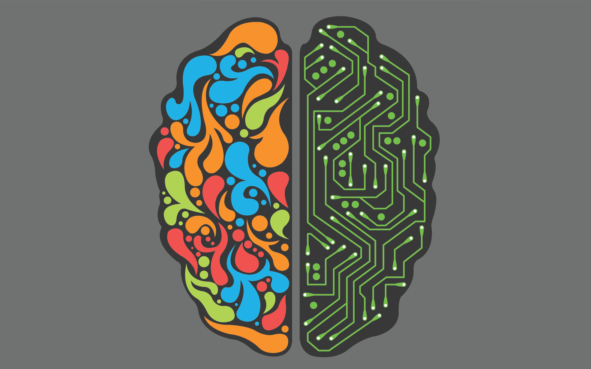

About

As a Data Science and AI enthusiast, my love for the applications of Machine Learning and Analytics remain limitless. With a dedication to functionality and a curiosity for what’s ahead of the curve, I keep my work practical, relevant and creative.
My skillsets include proficiency in Python, R and in-depth knowledge of subjects such as Advanced Statistics, Data Mining, Data Warehousing, Big Data, Predictive Modeling, Optimization, Deep Learning and Recommender Systems.
I have worked on projects in different fields of AI and NLP including Image Processing, Sentiment Analysis and Recommender Systems and applied concepts of neural networks, ensemble learning, gradient boosting, and several other machine learning and optimization techniques to provide solutions to real world problems.
I have also published a paper on Object Detection And Tracking using Image Processing which covers the idea of Fruit Sorting by applying the principles of Image Processing and Computer Vision (openCV).
Work
Senior Associate Data Scientist - Cognizant
Currently a part of the AI & Analytics team at Cognizant.
2020 AI Summer Honors Researcher - Stevens Institute of Technology
As a Summer Honors Researcher, I have researched on 'Approaches to Industrial Recommender Systems in Media and Entertainment' under Prof Hong Man.
Through this research, I have tried to explore how organizations such as Spotify, Netflix and YouTube leverage Recommender Systems to enjoy a high user share, as well as learn about the essence of approaches such as Natural Language Processing, Neural Networks and LSTM in optimizing user recommendations, making them more relevant and more meaningful.
Education
Graduate - Stevens Institute of Technology
Master of Science in Applied Artficial Intelligence (ECE)
Class of 2020
Undergraduate - University of Mumbai
Bachelor of Engineering in Electronics & Telecommunications
Class of 2018
Skills
Focus Areas
- Machine Learning
- Deep Learning
- Analytics
- Image Processing
- Recommender Systems
- NLP
Projects
Amazon Sentiment Analysis
In this project we carry out Sentimental Analysis on Amazon's Books dataset based on reviews on a million books and predict whether this review is 'Positive', 'Neutral', 'Negative'. Apart from reviews we have also predicted their individual ratings. We have Implemented multiple approaches to this project covering several concepts of Machine Learning and Natural Language Processing such as text classification, lemmatization, tokenizations, building our custom Naive Bayes model and ways to deal with Big Data.
View the code -
FastFoodie - The Restaurant Recommendation App
FastFoodie is a Restaurant Recommendation Web Application which aims at recommending the closest and the highest rated restaurants in 20 cities across New York, New Jersey, California, Texas and Washington.
The data for this app was obtained by web scraping the TripAdvisor Website using BeautifulSoup and the app can be used by anyone without having prior knowledge of Machine Learning.
View the code -
Facial Keypoints Detection
This is a Deep Learning project for detection and prediction of facial key-points and coordinates of facial features such as eyes, nose and mouth. We have implemented this project on Google Collab and used deep learning frameworks such as CNN and LeNet to formulate our predictions.
Have a look at my GitHub Profile for more projects and research on AI.
Contact